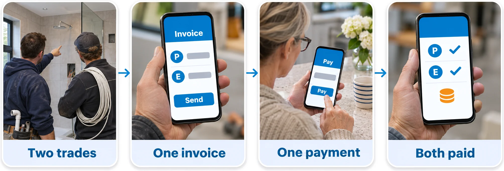
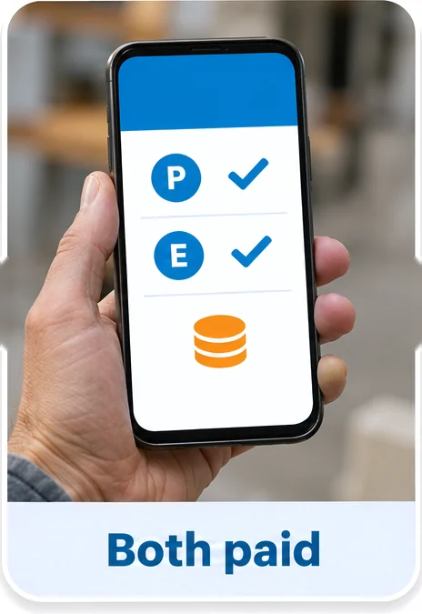

Shared Job Invoice
MoneyHarder, but possible

- 1

A plumber and an electrician look at the same wall.
- 2

They book one visit and send one invoice.
- 3
The customer pays once.
- 4

Each trade is paid their own part.
Problem
When a job needs a second trade, I either pay him out of my pocket or lose the job.
What you gain
I bid the whole job with a partner I trust, and each trade is paid for its own part.
Brings the next customer
The customer who gets one price for the whole job sends the next one to the same team.
Why build it
Customers want one price for the entire job, and this lets two providers give it.
Who has it
Solo providers who bring in other trades.
Also inside
- Two trades, one booking
- One invoice, two payments
- Pass it to the right trade